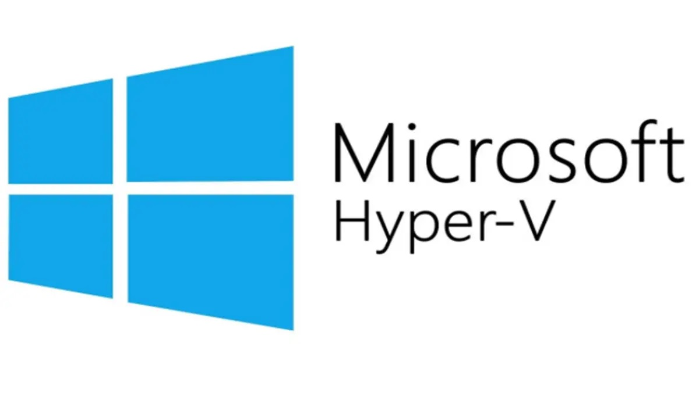
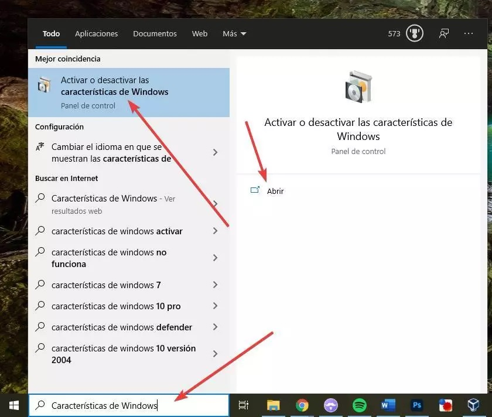
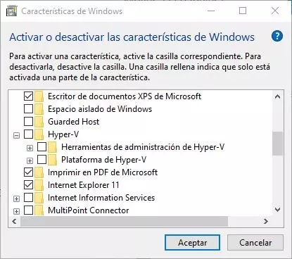
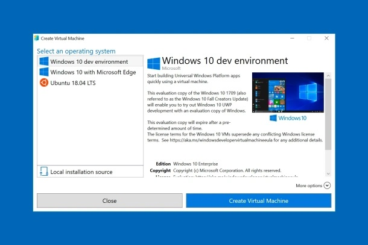
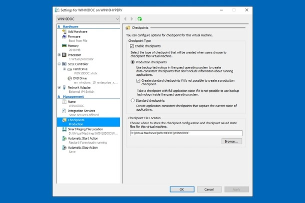

Hyper-V
Hyper-V es el hipervisor de Microsoft que viene incluido en las ediciones Pro, Enterprise y Education de Windows 10 y Windows 11. Este es el encargado de virtualizar hardware, usando funciones de la propia CPU del sistema
Empezando este Tutorial
- Cómo activar Hyper-V
- Activar desde Windows
- Eso sí, antes de nada, debemos tener en cuenta que necesitamos tener una versión Pro de Windows 10 o Windows 11 instalado en el ordenador (esta característica no está disponible en la edición Home) y, además, debemos haber habilitado en la BIOS/UEFI de nuestro ordenador las funciones de virtualización de la CPU. Estas son VT-x y VT-d en el caso de Intel, y AMD-V y AMD-Vi en el caso de AMD.
- Buscamos en el menú de inicio
características de Windows

- Nos mostrara una venta y buscamos el Hyper-V para activarlo
- Activar desde PowerShell
- Buscamos desde el menú de inicio
Windows PowerShelly lo ejecutamos como administrador - Y colocamos el siguiente comando
Enable-WindowsOptionalFeature -Online -FeatureName Microsoft-Hyper-V-All - El sistema se encargará de buscar y bajar todas las librerías y dependencias necesarias para habilitar esta función, y la activará en nuestro equipo
- Si ya tenemos Hyper-V instalado en el ordenador, pero lo hemos desactivado manualmente (u otro programa lo ha hecho), no es necesario volver a instalar la característica, puesto que ya está presente en el PC
- Buscamos desde el menú de inicio Windows PowerShell y lo ejecutamos como administrador
- Y colocamos el siguiente comando
bcdedit /set hypervisorlaunchtype auto - Desactivar la virtualización de Windows
- Desde características de Windows
- Para esto buscamos en el menú de inicio Características de Windows 
- Nos aseguramos de que la entrada «Hyper-V» queda desmarcada (así como sus subentradas, las cuales se deshabilitarán automáticamente) y aceptamos los cambios. De nuevo, tras reiniciar Windows, esta característica quedará desactivada.
- Desde PowerShell
- Buscamos desde el menú de inicio Windows PowerShell y lo ejecutamos como administrador
- Y colocamos el siguiente comando
Disable-WindowsOptionalFeature -Online -FeatureName Microsoft-Hyper-V-All - Tras deshabilitar el hipervisor de Windows mediante este comando, lo único que nos queda por hacer es reiniciar el sistema y listo. Al reiniciar, veremos un mensaje que nos indicará que se están realizando cambios.
- Si no queremos desinstalarlo por completo, y solo queremos desactivarlo temporalmente, podemos usar bcedit para deshabilitarlo. Esto dejará los archivos en el PC, pero el hipervisor no funcionará, por lo que no0 dará problemas con otros programas como VMware o VirtualBox. Para ello, podemos abrir una ventana de PowerShell, también con permisos de Administrador, y ejecutaremos:
bcdedit /set hypervisorlaunchtype off - Al reiniciar el PC, el hipervisor estará deshabilitado. Y podremos activarlo de nuevo, en caso de necesitarlo, sin tener que descargar e instalar la característica opcional.
- Cómo saber si Hyper-V está activado o desactivado
- Si no sabemos si Hyper-V está activado o desactivado en nuestro sistema, podemos comprobarlo de varias formas. La más rápida y sencilla es usando un simple comando de PowerShell
- Para ello, abriremos de nuevo una ventana de PowerShell con permisos de Administrador y ejecutaremos este comando:
Get-WindowsOptionalFeature -Online -FeatureName Microsoft-Hyper-V - Otra forma de comprobar si esta característica está o no en funcionamiento es con este otro comando, el cual se encarga de comprobar el estado del servicio para ver si está, o no, en funcionamiento y ejecutaremos este comando:
get-service | findstr vmcompute - Crear una máquina virtual
- Ahora que tenemos Windows 10 con Hyper-V ya es posible crear tu primera máquina virtual. Para ello, abrimos el menú Inicio y buscamos
Creación rápida en Hyper-Vo, en inglés,Hyper-V Quick Create. - A través de un práctico asistente tendremos la posibilidad de crear una nueva máquina virtual seleccionando un sistema operativo de la lista de la izquierda o indicando la imagen ISO de instalación desde Origen de instalación local. Además de imágenes ISO admite también imágenes VHD y VHDX. 
- Por último, hacemos clic en Crear máquina virtual y el asistente se encargará de crear la máquina virtual e instalar el sistema operativo elegido.
- Abrir la máquina virtual
- Para abrir nuestra nueva máquina virtual sólo tendremos que abrir el Administrador de Hyper-V y hacer doble clic en el nombre de la máquina en la lista de la izquierda. A partir de ahí, trabajar con ella no tiene secretos
- Aunque Hyper-V tiene muchas funciones avanzadas para personalizar el funcionamiento de la máquina virtual, para no extendernos demasiado, las opciones que nos serán más útiles son Configuración y Punto de control. Desde el Administrador de Hyper-V, al seleccionar tu PC, verás la máquina virtual en el panel central. Si lo seleccionas, verás las opciones disponibles en la columna de la derecha.
- En la mitad de abajo de la columna derecha, pulsando en Configuración tendrás acceso a las opciones de la máquina virtual. Ahí podemos hacer cambios de hardware para que la máquina virtual tenga más o menos recursos en caso que necesitemos que funcione más rápido. 
- Con Punto de control podemos guardar una instantánea de la máquina virtual tal y como está. Así, si ocurre un problema al probar un software o al abrir un archivo sospechoso y la máquina virtual deja de funcionar, no tendremos que crearla desde cero, sino que bastará con restaurar el punto de control en el que todo iba bien.
×